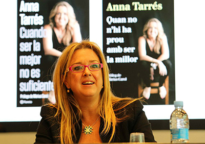
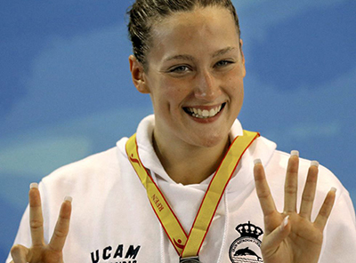

El Barceloneta se clasifica para la fase final
GANA EN LA VUELTA DE CUARTOS DE FINAL AL VOULIAGMENI
El Atlètic Barcelona se ha impuesto en la vuelta de cuartos de final al Vouliagmeni griego (16-10) y se ha clasificado para la 'Final Four' de la competición por primera vez en su historia. El equipo de Santi Fernández, que ya se había impuesto con claridad en el partido de ida (3-8), encarriló el encuentro en el primer cuarto, con un parcial de salida 5-0 y una gran actuación de Marc Minguel.
Real Canoe vence al CN Barcelona El Real Canoe madrileño venció al CN Barcelona, mientras que el Barceloneta, el Sabadell y el Terrassa no fallaron en sus primeros encuentros de las eliminatorias de cuartos de final de la División de Honor Masculina de waterpolo, previstas al mejor de tres.El libro de Tarrés trata "sobre el mayor escándalo del deporte"

La exseleccionadora presenta 'Cuando ser la mejor no es suficiente', en el que narra "su verdad" sobre los hechos que desembocaron en su no renovación tras los Juegos.El Mediterrani será el rival del Sabadell en semifinales El CE Medoterrani derrotó en el tercer y decisivo partido de cuartos al CN Terrassa y será el rival del CN Sabadell en las semifinales de la División de Honor de waterpolo, informa la federación española de natación.Mireia reina en el Universitario Ganó cinco pruebas en Murcia. Se impuso en los 200 mariposa, los 800 libres y en el 4x50 libres por la mañana. Y por la tarde en 400 libres y 4x50 estilos.La Federación convoca a 20 nadadores para el Mundial

Añade a seis jóvenes con proyección: Aitor Martínez, Albert Puig, Víctor M. Martín (con mínima B) y a Marta González, Markel Alberdi y Gerard Rodríguez (en relevos).
El Sabadell, bicampeón de Europa El CN Sabadell Astralpool se ha proclamado ganador de la Liga de Campeones femenina de waterpolo tras vencer hoy en la final, jugada en Budapest, al Kinef Kirishi ruso por 13-11, informa la federación española de natación. El CN sabadell, que logró su segundo título de la Copa de Campeones, llegó a la final tras batir en semifinales al Vouliagmeni NC por 9-8, mientras que el campeón ruso se deshizo por 16-10 del ZF Eger húngaro.Sanción al equipo australiano por usar sedantes La Federación Australiana de Natación ha decidido este viernes sancionar con suspensión y emitir una multa económica a los seis integrantes del equipo australiano de natación que admitieron que consumieron sedantes en la concentración previa a los Juegos Olímpicos de Londres.Costa, la más rápida en las series de los 100 libre Costa, que ayer ganó la final de los 200 libre e hizo la marca mínima para el Mundial de Barcelona 2013, hoy logró 56.04 en los 100 por debajo de Jakabos, segunda con 56.87.

 Natación
Natación